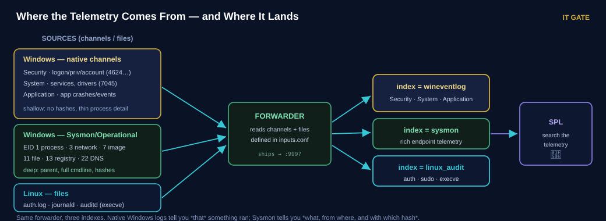
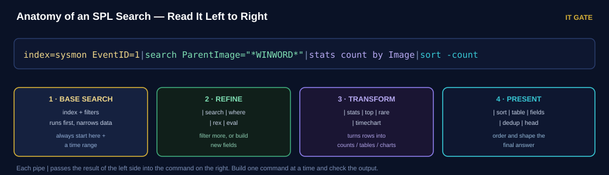
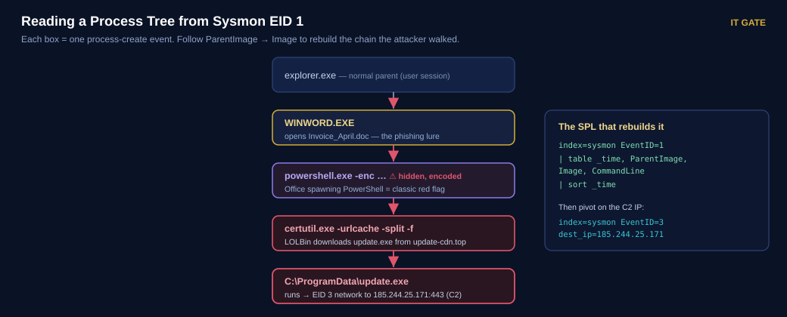

Read the Telemetry, Speak SPL
Yesterday logs started flowing. Today you learn what is actually inside them — and the query language that turns a million events into one answer.
Today's agenda
| Block | Topic | Time |
|---|---|---|
| 1 | Recap Session 2 | 10 min |
| 2 | Windows telemetry · the Event IDs that matter · Sysmon | 45 min |
| 3 | Lab — deploy Sysmon & auditd, forward, verify | 45 min |
| — | Break | 15 min |
| 4 | Linux telemetry · SPL deep dive | 45 min |
| 5 | SPL hands-on — Splunk: Exploring SPL | 40 min |
| 6 | Investigation challenges · knowledge check · homework | 40 min |
Your Session 2 lab must work — index=wineventlog and index=linux both
returning live events. If it isn't ready, fix it in the first block or pair with a neighbour.
What You Will Be Able To Do
Five things — telemetry you can read, and SPL you can write.
- Name the Windows event channels and the ~12 Event IDs an analyst uses every day.
- Explain why native logs are shallow and what Sysmon adds.
- Deploy Sysmon on WIN-VICTIM01 and forward its channel into a new
sysmonindex. - Read Linux telemetry —
auth.log,journald, andauditd. - Investigate independently with SPL:
stats,table,top,eval,rex, and pipe chaining.
Detection and forensics are only as good as two things: the telemetry underneath, and your ability to query it. Today you fix both. Every query you write today, you reuse for the rest of the course.
Quick Recap — Session 2
Answer before you reveal. If your lab isn't flowing, flag it now.
Q1 Which forwarder file decides what gets collected?
- outputs.conf
- inputs.conf
- props.conf
- server.conf
Q2 Which port do forwarders ship logs to?
- 8000
- 22
- 9997
- 514
Q3 Name the eight stages of the log pipeline in order.
Show answer
Generation → Collection → Shipping → Aggregation → Parsing → Storage → Analysis → Alerting. Today lives in Parsing (what the fields mean) and Analysis (SPL).
Q4 Session 2 said "full SPL and deep telemetry come next." Which two things do we turn on today?
Show answer
Sysmon (deep endpoint telemetry) and SPL (the analyst's query language). The logs you have are shallow — today they get deep and searchable.
Two Machines, One Attack, One Blind Spot
The difference between seeing an attack and missing it was one piece of telemetry.
An attacker ran certutil.exe — a trusted Windows tool — to download malware. On the first
machine, the Security log recorded only that "a process started." No command line. No parent. No hash.
The analyst saw something ran but never the malicious URL. The case went cold.
The machine next door had Sysmon installed. Same attack — but Sysmon recorded the full command line, the parent process (PowerShell, spawned by Word), and the file hash. The analyst pulled the whole chain in one search and shut it down in minutes.
Native Windows logs tell you that something happened. Sysmon tells you what, from where, and with which hash. Depth of telemetry decides whether you can answer the question at all.
Windows Telemetry — Channels & Providers
Windows logs are not one file. They are many channels, each written by a provider.
| Channel | What lives here | Analyst value |
|---|---|---|
| Security | Logon, privilege, account & policy changes | ⭐ highest — most detections start here |
| System | Services, drivers, system events | Service install (7045), crashes |
| Application | Application errors and events | App crashes, some tool logging |
| Sysmon/Operational | Rich endpoint activity (add-on) | ⭐ process, network, registry, DNS |
| PowerShell/Operational | Script block logging (4104) | What PowerShell actually ran |
In Event Viewer these sit under Windows Logs (Security, System, Application) and Applications and Services Logs (Sysmon, PowerShell). You already forward the first three — today you add Sysmon.
Module 3 · 3.3 — Windows event logs & channels
The Event IDs That Matter
You don't memorise thousands. You memorise about a dozen — the ones attacks touch.
| Event ID | Meaning | Why an attacker triggers it |
|---|---|---|
4624 | Successful logon | Access — check the Logon Type |
4625 | Failed logon | Brute force / password spray |
4634 / 4647 | Logoff | Session timelines |
4672 | Special privileges assigned | Admin / SYSTEM logon |
4688 | A new process was created | Execution (thin without Sysmon) |
4720 | User account created | Persistence — a new backdoor account |
4724 / 4738 | Password reset / account changed | Account takeover |
4732 | Member added to a local group | Privilege escalation (→ Administrators) |
4698 | Scheduled task created | Persistence |
7045 | Service installed | Persistence / lateral movement |
4104 | PowerShell script block | What the script actually did |
1102 | Security log cleared | Anti-forensics — attacker covering tracks |

46xx = Security account/logon story. 4624 in, 4625 failed, 4672 powerful, 4720 new user, 4732 made admin. 7045 = new service. 1102 = someone wiped the log — always suspicious.
Module 3 · 3.3 — Windows event logs · Module 4 · endpoint analysis
Sysmon — The Depth Native Logs Lack
Free, from Microsoft Sysinternals. It turns a thin process log into a full endpoint feed.
The native 4688 tells you a process started — but by default it hides the command line, and
it never records the file hash or a reliable parent chain. Sysmon fixes all three, and adds network,
registry and DNS visibility that Windows simply doesn't log on its own.
| Sysmon Event ID | Records | Analyst use |
|---|---|---|
1 | Process create — parent, full command line, hashes | Rebuild the process tree |
3 | Network connection (per process) | Find C2 / beaconing |
7 | Image / DLL loaded | DLL side-loading |
8 | CreateRemoteThread | Process injection |
11 | File created | Dropped payloads |
13 | Registry value set | Run-key persistence |
22 | DNS query | Malicious domain lookups |
Out of the box Sysmon is noisy. It is driven by an XML config that filters what to keep. The community standard is SwiftOnSecurity's sysmonconfig.xml (or Olaf Hartong's modular config) — start there, tune later. No config = drowning in noise.
Sysmon event in Event Viewer
- Shows
- One Sysmon Event ID 1 opened in Event Viewer, with ParentImage, CommandLine and Hashes highlighted.
- Purpose
- Prove visually how much more Sysmon EID 1 carries than a native 4688.
- Source
- TryHackMe · Sysmon room — capture during the in-class lab, drop into
images/thm-sysmon-eid1.png.
Module 3 · 3.3 — endpoint telemetry (Sysmon) · Module 4 · process analysis
Watch One Event's Anatomy
The instructor opens a single event in Splunk and reads every field that matters.
Follow along. The instructor runs one search, opens one event, and names each field — then finds the same event two ways. This is how you learn to read telemetry, not just collect it.
- Find a logon.
index=wineventlog EventCode=4624— open one event. - Read the fields. Account_Name, Logon_Type (2 = local, 3 = network, 10 = RDP), Source IP.
- Compare a native process to Sysmon.
index=wineventlog EventCode=4688vsindex=sysmon EventID=1— see the command line and hash only Sysmon has. - Pivot. Take one field value and search it across indexes.
Windows event anatomy
- Shows
- A Windows Security event expanded, with the key fields (Account, Logon Type, Source Address) labelled.
- Purpose
- A reference image students keep for reading any Windows event.
- Source
- TryHackMe · Windows Logging for SOC — capture in the live demo, save to
images/thm-win-event-anatomy.png.
Notice the instructor never trusts one field alone — a 4624 without its Logon Type is half a story. Reading events means reading the combination of fields.
Lab — Deploy Sysmon & auditd, Forward Both
Give your lab deep eyes. Verify every step before moving on.
Snapshot WIN-VICTIM01 as pre-sysmon and SOC-CORE01 as pre-s3. Your Session 2
forwarders must already be running.
- Create the Sysmon index on SOC-CORE01.
sudo /opt/splunk/bin/splunk add index sysmon sudo /opt/splunk/bin/splunk add index linux_audit - Install Sysmon on WIN-VICTIM01 with a filtering config.
Download Sysmon (Sysinternals) and
sysmonconfig.xml(SwiftOnSecurity). In an admin PowerShell:.\Sysmon64.exe -accepteula -i sysmonconfig.xml # verify the service and driver are running Get-Service Sysmon64 - Tell the forwarder to collect the Sysmon channel.
Add to
...\SplunkUniversalForwarder\etc\system\local\inputs.conf:[WinEventLog://Microsoft-Windows-Sysmon/Operational] disabled = 0 index = sysmon renderXml = falseRestart-Service SplunkForwarder - Turn on auditd on LNX-VICTIM01.
sudo apt-get install -y auditd # watch execve and identity changes sudo auditctl -a always,exit -F arch=b64 -S execve -k proc sudo auditctl -w /etc/passwd -p wa -k identity # forward the audit log sudo /opt/splunkforwarder/bin/splunk add monitor /var/log/audit/audit.log -index linux_audit sudo /opt/splunkforwarder/bin/splunk restart
✅ Verification
index=sysmonreturns events; open Notepad → a Sysmon EID 1 appears with a full CommandLineindex=sysmon EventID=3shows a network connection when you open a browserindex=linux_auditreturnsexecveevents after you run a command on LNX-VICTIM01
Do the TryHackMe Sysmon room now. You just produced Sysmon events; the room teaches you to read them (ransomware, persistence, C2 patterns). Reading beats collecting.
Snapshot WIN-VICTIM01 as sysmon-ready.
Knowledge Check — First Half
Q1 Which Sysmon Event ID gives you parent process, command line and file hash?
- EID 3
- EID 13
- EID 1
- EID 22
Q2 You see Event ID 4732 adding an account to Administrators. What is it?
- Privilege escalation — account added to a group
- A failed logon
- A cleared log
- A new scheduled task
Q3 Why is a native 4688 often not enough to investigate an execution?
Show answer
By default it hides the command line and never records the file hash or a reliable parent chain. Sysmon EID 1 (or enabling command-line auditing) fills that gap.
Q4 You find Event ID 1102. Why should that immediately raise your attention?
Show answer
1102 = the Security log was cleared. That is anti-forensics — an attacker covering tracks. Legitimate log clears are rare and should be explainable.
Break
Stretch. When we return: Linux telemetry and the SPL that ties it all together.
Break time
Press start when the break begins.
Use the break to fix it or pair up. You need index=sysmon returning events for the SPL block.
Linux Telemetry — auth.log, journald, auditd
No Event Viewer. On Linux, logs are plain-text files and a query-able audit trail.
| Source | Where | What it answers |
|---|---|---|
| auth.log | /var/log/auth.log | SSH logins, sudo, su — who got in and who elevated |
| syslog | /var/log/syslog | General system + service messages |
| journald | journalctl | Structured systemd journal — query by unit, time, priority |
| auditd | /var/log/audit/audit.log | ⭐ definitive forensic trail — execve, file access, keyed rules |
Triage in layers: start with auth.log for the high-level "who logged in and elevated",
then pivot to auditd for the exact commands (execve) and file touches. The
audit key (-k) you set on a rule is your fastest filter.
auth.log ≈ Security channel (logon story). auditd execve ≈ Sysmon EID 1
(process execution). Same questions, different operating system.
Module 3 · 3.4 — Linux logs & auditing
SPL — The Analyst's Query Language
One pattern, a handful of commands. Master these and you can answer almost anything.

The commands you'll use daily
| Command | Does | Example |
|---|---|---|
stats | Count / aggregate | | stats count by Image |
table | Pick columns to show | | table _time, User, CommandLine |
top / rare | Most / least common | | top 10 ParentImage |
eval | Build a new field | | eval hour=strftime(_time,"%H") |
rex | Extract with regex | | rex field=CommandLine "http[s]?://(?<url>\S+)" |
sort / dedup | Order / de-duplicate | | sort -count |
timechart | Count over time | | timechart count by host |
Write the base search, run it, look at the fields. Add one command, run again. Never write a five-pipe query blind — you can't tell which stage broke. Slow is smooth, smooth is fast.
Module 3 · 3.10–3.11 — Splunk Search Processing Language
Hands-on — Speak SPL
Query your own Sysmon and Linux data, then reinforce it in the TryHackMe room.
Run these against your lab. Build each one pipe at a time and read the output before adding the next.
# top parent processes on the endpoint — what spawns what?
index=sysmon EventID=1 | stats count by ParentImage | sort -count
# any Office app spawning a shell? (a classic red flag)
index=sysmon EventID=1 ParentImage="*WINWORD*" OR ParentImage="*EXCEL*"
| table _time, ParentImage, Image, CommandLine
# pull URLs out of command lines with rex
index=sysmon EventID=1 | rex field=CommandLine "(?<url>https?://\S+)"
| stats count by url
# outbound connections by process
index=sysmon EventID=3 | stats count by Image, dest_ip, dest_port | sort -count
# Linux: failed SSH by source IP
index=linux_audit event_type=ssh_login result=failure
| stats count by src_ip | sort -count
# Linux: what did auditd see run as root?
index=linux_audit event_type=execve user=root | table _time, process, commandSplunk SPL results
- Shows
- A transforming SPL search (e.g.
stats count by) with its results table in the Splunk search app. - Purpose
- Show students the shape of a good SPL result before they build their own.
- Source
- TryHackMe · Splunk: Exploring SPL — capture during the in-class room, save to
images/thm-spl-results.png.
Work the TryHackMe Splunk: Exploring SPL room now. Its prerequisites are the exact Intro to SIEM + Splunk Basics you already did — so this builds straight on them. Do the transforming-command sections together.
Every one of these is a real hunt. "What spawns a shell?" catches phishing payloads. "URLs in command lines" catches LOLBin downloads. You're not learning syntax — you're learning questions.
Investigation — Rebuild the Process Tree
Telemetry + SPL come together: reconstruct an attack from process-create events alone.

Each Sysmon EID 1 event names both the process and its parent. Chain them and the whole intrusion
appears: a Word document spawned hidden PowerShell, which used certutil (a trusted tool) to
download a payload, which then connected out to a C2 server.
Once you have the payload's name or the C2 IP, pivot: index=sysmon EventID=3
dest_ip=185.244.25.171 shows every process that talked to the C2. One field value opens the
whole case. This is the core skill for the rest of the course.
Investigation Challenges
Three datasets built from today's telemetry. Ingest, investigate, answer from the evidence.
Ingest (Add Data → Upload → source type _json)
| Challenge | Index | Telemetry |
|---|---|---|
| Warm-up · Linux auth & auditd | linux_audit | SSH brute force → sudo → recon |
| Scenario 1 · Windows process execution | sysmon | Phishing → LOLBin → payload → C2 |
| Scenario 2 · Windows persistence | wineventlog | New admin → service → task → log wipe |
🔎 Open the S3 challenges (datasets + questions)
Same loop as Session 2, deeper data: upload → parse → search (stats, rex)
→ answer. Scenario 1 is the certutil chain you just studied; Scenario 2 is the persistence an
attacker sets up right after. Reconstruct each from the logs alone.
Do the Linux warm-up together, then race Scenario 1 in pairs. Scenario 2 (persistence) is homework. Instructors: SPL solutions are hidden under each scenario on the challenges page.
Module 3 · 3.11 (SPL) · Module 4 · endpoint & process analysis
Knowledge Check — Second Half
Q1 Which SPL command counts events grouped by a field?
- table
- stats count by
- sort
- dedup
Q2 Which Linux source gives the definitive record of exact commands run?
- syslog
- auth.log
- dmesg
- auditd (audit.log)
Q3 Write an SPL search that lists the top 10 parent processes in Sysmon.
Show answer
index=sysmon EventID=1 | top 10 ParentImage — or | stats count by ParentImage | sort -count | head 10.
Q4 You have a suspicious C2 IP. In one sentence, how do you find every process that contacted it?
Show answer
Pivot on the network events: index=sysmon EventID=3 dest_ip=<that IP> | stats count by Image — one field value reveals every process that talked to the C2.
Summary & Cheat Sheet
What we learned, in order
- Windows channels and the ~12 Event IDs attacks touch.
- Why native logs are shallow — and what Sysmon adds.
- Deployed Sysmon + auditd and forwarded both.
- Read Linux telemetry — auth.log, journald, auditd.
- Learned SPL — the query language for every session after this.
- Rebuilt a process tree and pivoted on a C2 IP.
📋 Session 3 Cheat Sheet
Windows Event IDs
4624/4625logon ok / failed4672special privileges4720/4732user made / added to group7045service ·4698task1102log cleared (⚠)
Logon types (4624)
2interactive (local)3network10RemoteInteractive (RDP)5service ·7unlock
Sysmon Event IDs
1process (parent, cmdline, hash)3network connection7image load ·8remote thread11file ·13registry ·22DNS
Windows channels
- Security · System · Application
- Microsoft-Windows-Sysmon/Operational
- PowerShell/Operational (
4104) - inputs.conf →
index=sysmon
Linux telemetry
/var/log/auth.log— SSH, sudojournalctl— systemd journal/var/log/audit/audit.log— auditdauditctl -S execve -k proc
SPL commands
| stats count by field| table _time, a, b·| top field| eval new=…·| rex field=… "…"| sort -count·| dedup field
Deploy Sysmon
Sysmon64.exe -accepteula -i config.xml- Config: SwiftOnSecurity / Olaf Hartong
- inputs.conf → Sysmon/Operational →
index=sysmon Get-Service Sysmon64
Core hunts (SPL)
- Office spawns shell:
ParentImage="*WINWORD*" - URLs in cmdline:
| rex … https?:// - C2 pivot:
EventID=3 dest_ip=… - Brute force:
4625 | stats count by src
You can read telemetry and query it. Session 4 turns that into detection engineering — you write the rules (Sigma → Splunk + Wazuh) that raise the alerts you used to only receive.
Key Takeaways
- Windows logs live in channels; ~12 Event IDs cover most attacks.
- Native logs say that something ran; Sysmon says what, from where, and which hash.
- Sysmon EID 1 = parent + command line + hash. EID 3 = network. Config tames the noise.
- Linux:
auth.logfor the logon story,auditdfor the exact commands. - SPL pattern: base search → refine → transform → present, one pipe at a time.
- One field value (a hash, a C2 IP) pivots into the whole case.
- Good analysts aren't memorising syntax — they're asking better questions.
Homework
Lock in the telemetry and SPL before detection engineering in Session 4.
Finish the lab — Sysmon & auditd flowing
RequiredDue · 11 Augindex=sysmon must return EID 1 with command lines, and index=linux_audit
must return execve events. This is the telemetry every remaining session depends on.
TryHackMe — Windows Event Logs
RequiredDue · 11 AugReinforces reading Windows events with wevtutil, Get-WinEvent and Event Viewer — the foundations behind the channels we covered.
TryHackMe — Linux Logging for SOC
RequiredDue · 11 Augauth.log, package logs, bash history and auditd — the Linux half of today, hands-on.
execve.Go deeper — Splunk: Data Manipulation
OptionalDue · 18 AugField extraction and normalization — the exact skill for parsing messy firewall/syslog data in later sessions.
rex.Also finish Scenario 2 (Windows persistence) on the challenges page. Progress is saved in this browser. "Add all deadlines" downloads an .ics for your calendar.
References
Primary source — INE eCIR v2
| Topic | INE module & lesson |
|---|---|
| Windows event logs & channels | Module 3 · 3.3 |
| Endpoint telemetry (Sysmon) | Module 3 · 3.3 · Module 4 |
| Linux logs & auditing | Module 3 · 3.4 |
| Splunk Search Processing Language | Module 3 · 3.10–3.11 |
| Process & endpoint analysis | Module 4 |
Supporting labs — TryHackMe
- Windows Logging for SOC (in-class demo)
- Sysmon (in-class)
- Splunk: Exploring SPL (in-class)
- Windows Event Logs (homework)
- Linux Logging for SOC (homework)
- Splunk: Data Manipulation (optional)
Lab guide
INE is the primary reference for the exam. THM reinforces — where wording differs, INE wins. Sysmon config credit: SwiftOnSecurity & Olaf Hartong (community configs).
Create a homework task
Add your own lab, reading or exercise to this session's homework list.
Navigate with ← → arrow keys